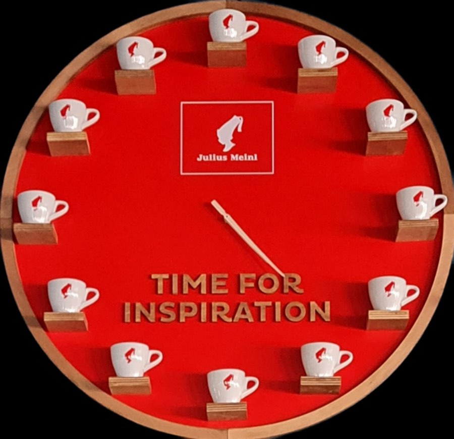
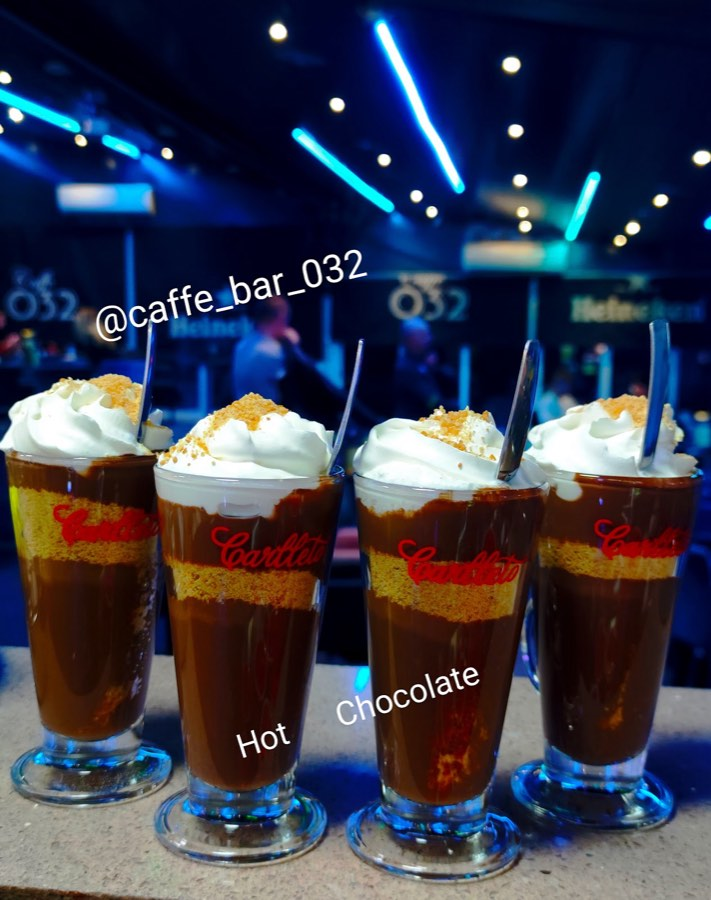
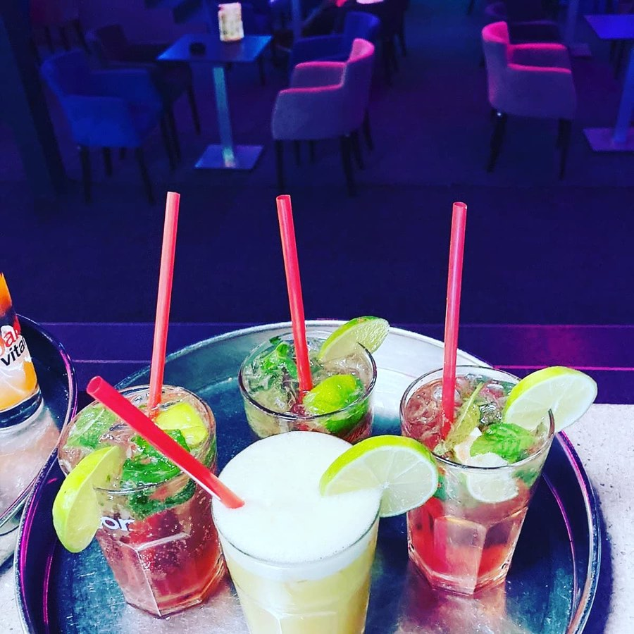
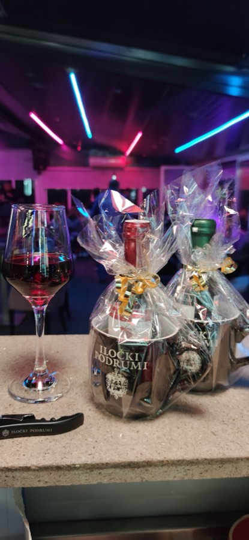

Ponuda
Od kave do koktela
Što se pije u 032, od prve jutarnje kave do zadnje večernje runde. Aktualne cijene i novosti pitajte na šanku ili na 091 203 2100.

Od 6 ujutro
Kava
Za šankom pod crvenim lampama Julius Meinl kava se kuha od otvaranja, a pije za šankom, za stolom ili na terasi.
- Kava i kapučino
za brzu jutarnju pauzu ili dugu kavu s društvom - Hladni napitci
za ljetna popodneva na terasi

Za hladnije dane
Topla čokolada
Gusta topla čokolada u visokoj čaši, sa šlagom i mrvicama keksa. Gosti posebno hvale toplu bijelu čokoladu s oreo keksima i šlagom.
- Topla čokolada
tamna ili bijela - Dodaci
šlag, keksi i preljevi

Navečer
Kokteli i limunade
Šareni kokteli s limetom i mentom i osvježavajuće limunade. Pitajte za King Kong koktel koji gosti često spominju.
- Kokteli
voćni i osvježavajući, s limetom i mentom - King Kong koktel
preporuka gostiju - Limunade
s limetom, ledom i slamkom

Domaće
Pivo i vino
Uz pivo iz punih hladnjaka na meniju su i piva iz Vukovara te vina Iločkih podruma.
- Vukovarsko pivo
lokalno pivo iz grada - Walkow craft pivo
vukovarsko craft pivo - Vina Iločkih podruma
vino na čašu
Dođite na piće
Stol za društvo?
Javite se unaprijed i čuvamo vam mjesto na terasi ili u salonu.